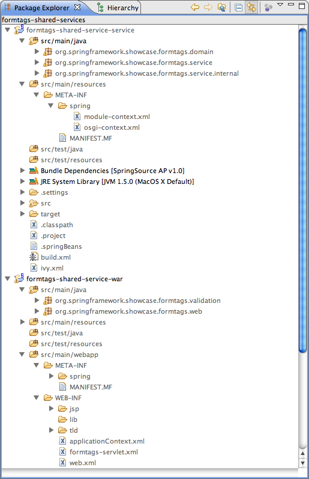
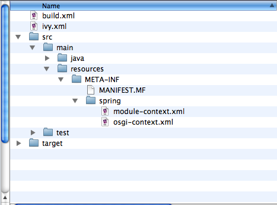
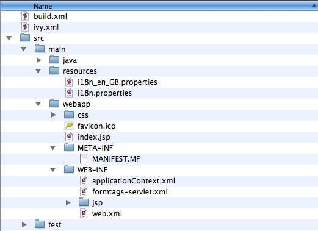

The next step in the migration is to deploy the services as a
separate
OSGi bundle which the WAR then references.
The Form Tags
sample has a single service
UserManager
.
This scenario has two separate deployables, the
service
bundle and the WAR file.
The following image shows the two separate
source trees:

.domain
or
.service
packages as these will be imported from the separate service bundle.
The responsibility of the first bundle (
formtags-shared-services-service
)
is to provide the API of the formtags service. This includes both
the
domain and the service API. In the same way that imports are
defined
in the
/META-INF/MANIFEST.MF
, so are exports.
The following is the
/META-INF/MANIFEST.MF
listing from the service bundle.
Manifest-Version: 1.0
Ant-Version: Apache Ant 1.7.0
Created-By: 1.5.0_13-119 (Apple Inc.)
Bundle-ManifestVersion: 2
Bundle-Name: FormTags Service (and implementation)
Bundle-SymbolicName: org.springframework.showcase.formtags.service-shared-services
Export-Package: org.springframework.showcase.formtags.service,org.spri
ngframework.showcase.formtags.domain
Import-Library: org.springframework.spring;version="[3.0.0,4.0.0)"
The symbolic name of this bundle is
org.springframework.showcase.formtags.service-shared-services
.
Note that the name of the bundle typically describes the package
that the bundle primarily exports.
If you take a look at the
repository/bundles/ext
in the VTS
directory, you’ll see that
names are almost always indicative of the contents of the bundle.
For this example, however, we have also appended
"
-shared-services
"
in order to avoid possible clashes with other bundle symbolic
names.
You will see later that the PAR also contains a service
bundle.
Bundle-SymbolicName
and
Bundle-Version
is used to uniquely identify
a bundle within the OSGi container.
Furthermore, when you deploy
a bundle to the Virgo Server for Apache Tomcat,
for example via the
pickup
directory, a bundle’s filename is also used to uniquely
identify it for
the purpose of supporting
hot deployment
via
the file system.
As well as exporting types (i.e. the domain classes and service
API), the service bundle also publishes an implementation of the
UserManager
. The actual implementation is
StubUserManager
; however, that should remain an
implementation detail of this
bundle.
The fact that this bundle publishes a service is not captured in
the
/META-INF/MANIFEST.MF
, as it is a Spring-DM concept.
The following image is of
src/main/resources/spring
.

As you can see there are two Spring configuration files:
module-context.xml
and
osgi-context.xml
.
module-context.xml
typically bootstraps the Spring context
(usually delegating to
smaller fine grained context files inside another directory),
whilst
osgi-context.xml
contains all the OSGi service exports and references.
The following is a listing of
module-context.xml
.
<?xml version="1.0" encoding="UTF-8"?> <beans xmlns="http://www.springframework.org/schema/beans" xmlns:xsi="http://www.w3.org/2001/XMLSchema-instance" xsi:schemaLocation=" http://www.springframework.org/schema/beans http://www.springframework.org/schema/beans/spring-beans-2.5.xsd"> <bean id="userManager" class="org.springframework.showcase.formtags.service.internal.StubUserManager"/> </beans>
As you can see, this simply defines a bean called
userManager
.
The following is a listing of
osgi-context.xml
.
<?xml version="1.0" encoding="UTF-8"?> <beans:beans xmlns="http://www.springframework.org/schema/osgi" xmlns:xsi="http://www.w3.org/2001/XMLSchema-instance" xmlns:beans="http://www.springframework.org/schema/beans" xsi:schemaLocation="http://www.springframework.org/schema/osgi http://www.springframework.org/schema/osgi/spring-osgi.xsd http://www.springframework.org/schema/beans http://www.springframework.org/schema/beans/spring-beans.xsd"> <service ref="userManager" interface="org.springframework.showcase.formtags.service.UserManager"/> </beans:beans>
This single bean definition exports the
userManager
defined in
module-context.xml
to the
OSGi service registry and makes it available under the public
org.springframework.showcase.formtags.service.UserManager
API.
The service bundle should now be ready to deploy on the
VTS.
So copy
/dist/formtags-shared-services-services*
to the
SERVER_HOME/pickup
directory.
Output similar to the following should appear in the
VTS’s console:
The console output has been reformatted to fit this document.
[2009-07-01 15:05:03.511] fs-watcher <SPDE0048I> Processing 'CREATED' event for file 'formtags-shared-services-service-2.0.0.RELEASE.jar'. [2009-07-01 15:05:03.688] fs-watcher <SPDE0010I> Deployment of 'org.springframework.showcase.formtags.service_shared_services' version '2.0.0.RELEASE' completed.
The WAR file now needs to access the types and service exported
by
the service bundle. The following listing is the WAR’s
/META-INF/MANIFEST.MF
which imports the types
exported by the service bundle. The
Import-Bundle
statement has also been extended to import
org.springframework.osgi.core
,
which is necessary in order to load an OSGi-enabled
WebApplicationContext
.
Manifest-Version: 1.0 Ant-Version: Apache Ant 1.7.0 Created-By: 1.5.0_13-119 (Apple Inc.) Bundle-ManifestVersion: 2 Bundle-SymbolicName: org.springframework.showcase.formtags.web-shared- services Import-Package: org.springframework.showcase.formtags.domain,org.sprin gframework.showcase.formtags.service, org.eclipse.virgo.web.dm;version="[1.0,2.1)" Import-Library: org.springframework.spring;version="[2.5.4,3.1.0)" Import-Bundle: com.springsource.org.apache.taglibs.standard;version="1 .1.2",org.springframework.osgi.core
In addition to importing the exported types of the service bundle,
the WAR must also obtain a reference to the
UserManager
published by the service bundle. The following image shows the
directory
structure of the Shared Services WAR.

As you can see in the above image, the Form Tags Shared Services
WAR’s
/WEB-INF/web.xml
directory contains a standard
web.xml
deployment descriptor,
applicationContext.xml
which defines the configuration
for the
root
WebApplicationContext
, and
formtags-servlet.xml
which defines the configuration specific to the
configured
formtags
DispatcherServlet
.
As is typical for Spring MVC based web applications, you configure a
ContextLoaderListener
in
web.xml
to load your root
WebApplicationContext
; however, to enable your
WebApplicationContext
to be able to reference services from the OSGi Service Registry,
you
must explicitly set the
contextClass
Servlet context parameter to the fully qualified
class name of a
ConfigurableWebApplicationContext
which is OSGi-enabled. When deploying
Shared Services WARs to the
Virgo Server for Apache Tomcat, you should use
org.eclipse.virgo.web.dm.ServerOsgiBundleXmlWebApplicationContext
.
This will
then enable the use of Spring-DM’s
<reference ... />
within your root
WebApplicationContext
(i.e., in
applicationContext.xml
).
The following listing is an excerpt from
/WEB-INF/web.xml
.
<context-param> <param-name>contextClass</param-name> <param-value>org.eclipse.virgo.web.dm.ServerOsgiBundleXmlWebApplicationContext</param-value> </context-param> <listener> <listener-class>org.springframework.web.context.ContextLoaderListener</listener-class> </listener>
The Form Tags Shared Services WAR contains a
/WEB-INF/applicationContext.xml
file which is the default configuration location used to create the
root
WebApplicationContext
for Spring MVC’s
ContextLoaderListener
.
/META-INF/
directory.
Typically Spring-DM powered configuration files will live
there as well (e.g., in
/META-INF/spring/*.xml
).
In a WAR, however, the root
WebApplicationContext
loaded by
ContextLoaderListener
and the
DispatcherServlet’s
application context typically live in
/WEB-INF/
.
The following is the listing of the WAR’s
/WEB-INF/applicationContext.xml
.
<?xml version="1.0" encoding="UTF-8"?> <beans:beans xmlns="http://www.springframework.org/schema/osgi" xmlns:xsi="http://www.w3.org/2001/XMLSchema-instance" xmlns:beans="http://www.springframework.org/schema/beans" xsi:schemaLocation="http://www.springframework.org/schema/osgi http://www.springframework.org/schema/osgi/spring-osgi.xsd http://www.springframework.org/schema/beans http://www.springframework.org/schema/beans/spring-beans.xsd"> <reference id="userManager" interface="org.springframework.showcase.formtags.service.UserManager"/> </beans:beans>
The single bean declaration is retrieving a service that implements
the
org.springframework.showcase.formtags.service.UserManager
API from the OSGi Service Registry.
One of the benefits of programming to interfaces is that you are decoupled from the actual implementation; Spring-DM provides a proxy. This has enormous benefits including the ability to dynamically refresh individual bundles without cascading that refresh to unrelated bundles.
To deploy the WAR, copy
/dist/formtags-shared-services-war*
to the
SERVER_HOME/pickup
directory.
You should then see console output similar to the
following:
The console output has been reformatted to fit this document.
[2009-07-01 15:09:19.819] fs-watcher
<SPDE0048I> Processing 'CREATED' event for file 'formtags-shared-services-war-3.0.0.RELEASE.war'.
[2009-07-01 15:09:20.167] fs-watcher
<SPDE0010I> Deployment of 'org.springframework.showcase.formtags.web_shared_services' version '3' completed.
[2009-07-01 15:09:20.168] Thread-20
<SPWE0000I> Starting web bundle '/formtags-shared-services-war-3.0.0.RELEASE'.
[2009-07-01 15:09:20.647] Thread-20
<SPWE0001I> Started web bundle '/formtags-shared-services-war-3.0.0.RELEASE'.
Navigating to the appropriate link should render the welcome page.